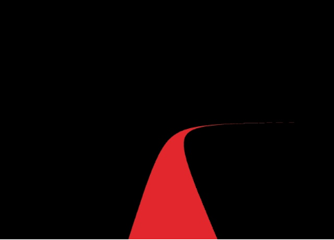
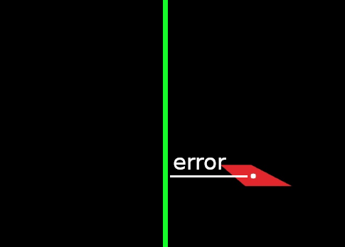

First step: color segmentation
The first thing I needed to do was to apply a color segmentation to the input image, in order to detect the red line.
Selecting a portion of the image
For the line coordinates(in pixels) to be calculated, a portion of the image has to be selected:
Calculating the center of mass
"cv2.moments()" does this, returning the coordinates in pixels. I then printed them in the image for clarity:
Getting the error
The error is simply the x coordinate of the pixels that are in the middle of the image minus the x coordinate of the center of mass:
proportional control on angular velocity
Keeping the linear velocity constant and low, I implemented the proportional controller, and tweaked the constant until I had almost no oscilation. Then I kept increasing the speed until the p controller couldn't handle by itself. velocity = w_K_p * error
Adding the derivative part
Then I implemented the derivative part, simply by adding the difference of errors multiplied by a constant: velocity = w_K_p * error + w_K_d * (error - last_error). I spent quite some time tweaking the constants while increasing the speed until it couldn't handle more of it.
Adding the proportional control to the linear velocity
I did a linear function that takes the error and returns a velocity. If the error is less that a certain threshold, it returns the max velocity. If the error is bigger that another threshold, it returns the velocity that the pd controller of the angular velocity can tolerate. I also added a "smoother" that prevents abrupt changes in the velocity.
Video demonstration
I managed to stop the clock at ~1.33.